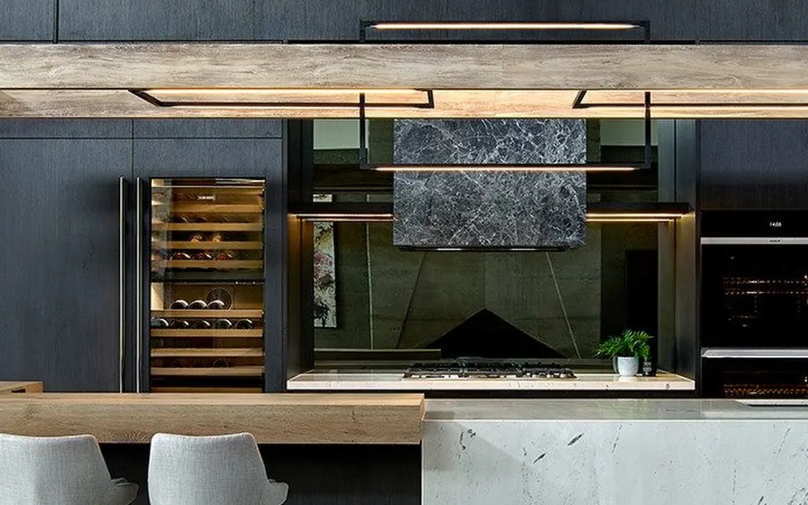
Präzision, die man sieht — Montage, auf die man sich verlässt.
Giant Küchenmontagen montiert Küchen und Möbel in Norderstedt und Umgebung – vom Korpusaufbau bis zum letzten Handgriff. Zuverlässig, sauber und termingerecht.
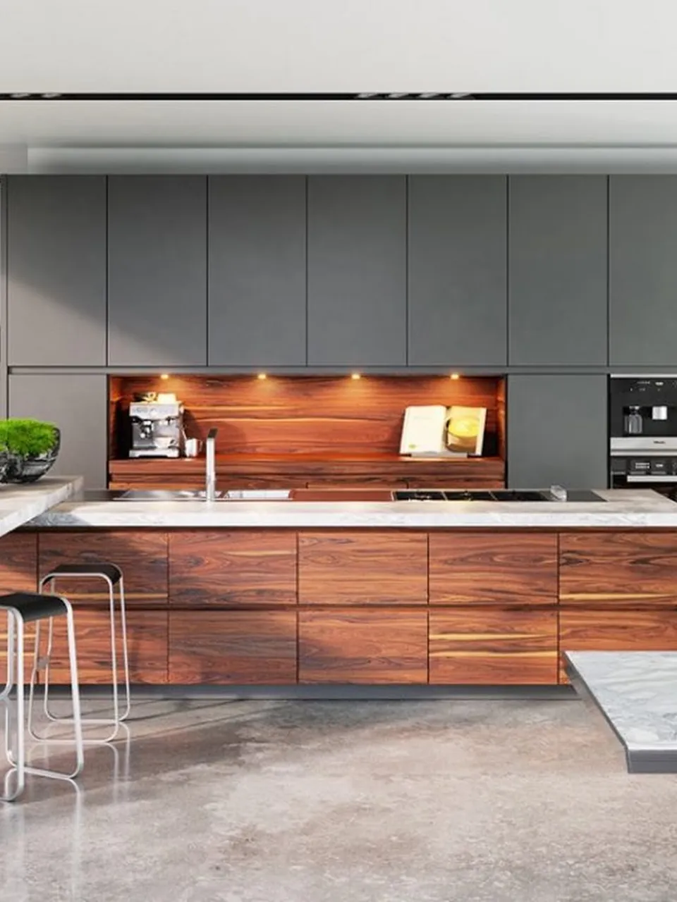
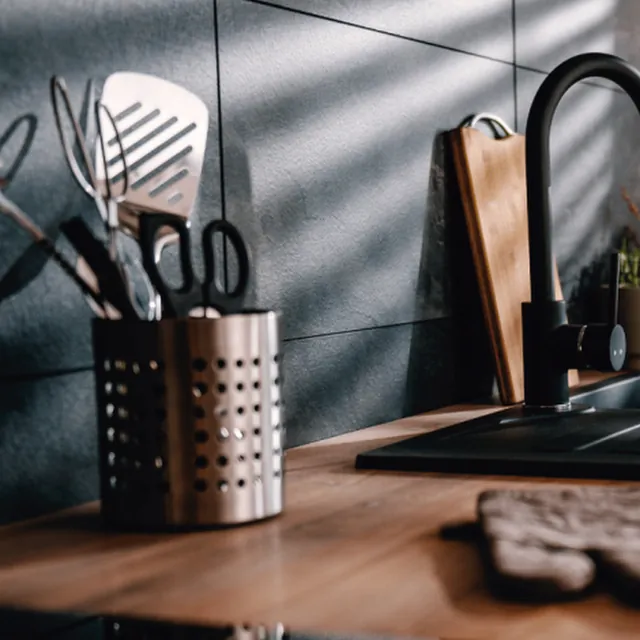
Eine Küche ist mehr als Möbel – sie ist der Mittelpunkt des Zuhauses.
Giant Küchenmontagen ist ein Montagebetrieb für Küchen und Möbel mit Sitz in Norderstedt. Wir übernehmen den fachgerechten Aufbau für Privathaushalte, Küchenstudios und Möbelhäuser – unabhängig davon, wo die Küche gekauft wurde. Wir sorgen dafür, dass die Montage genauso durchdacht ist wie die Planung.
Projekt anfragenWas wir für Sie übernehmen
Vier Leistungsfelder, ein Team: von der ersten Schraube bis zur letzten Fuge begleiten wir Ihre Montage vollständig.
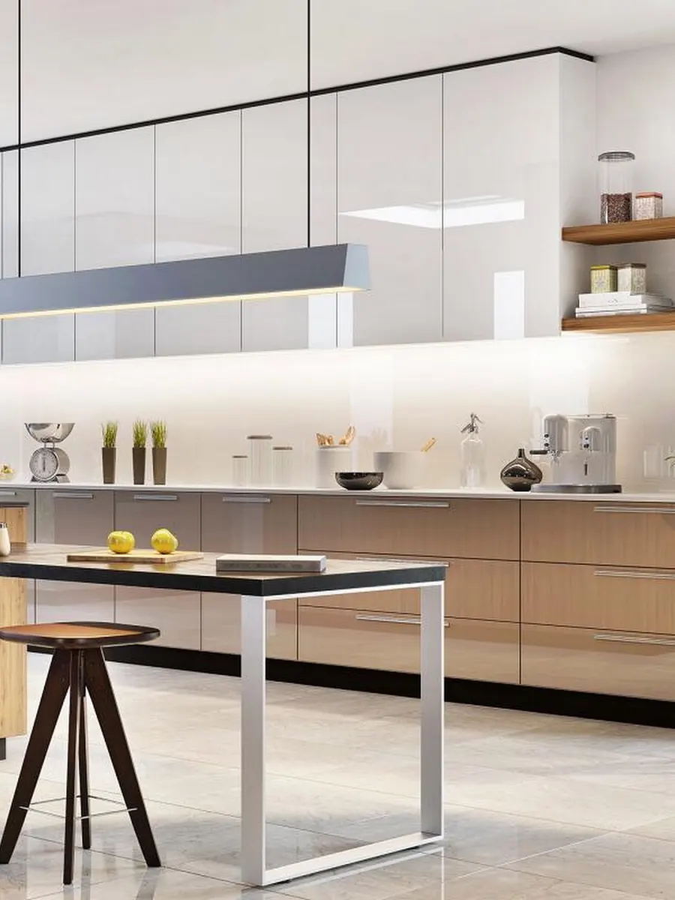
01Küchenmontage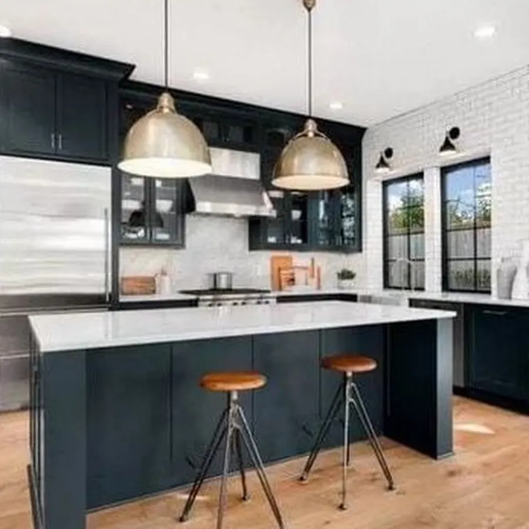
02Geräteanschluss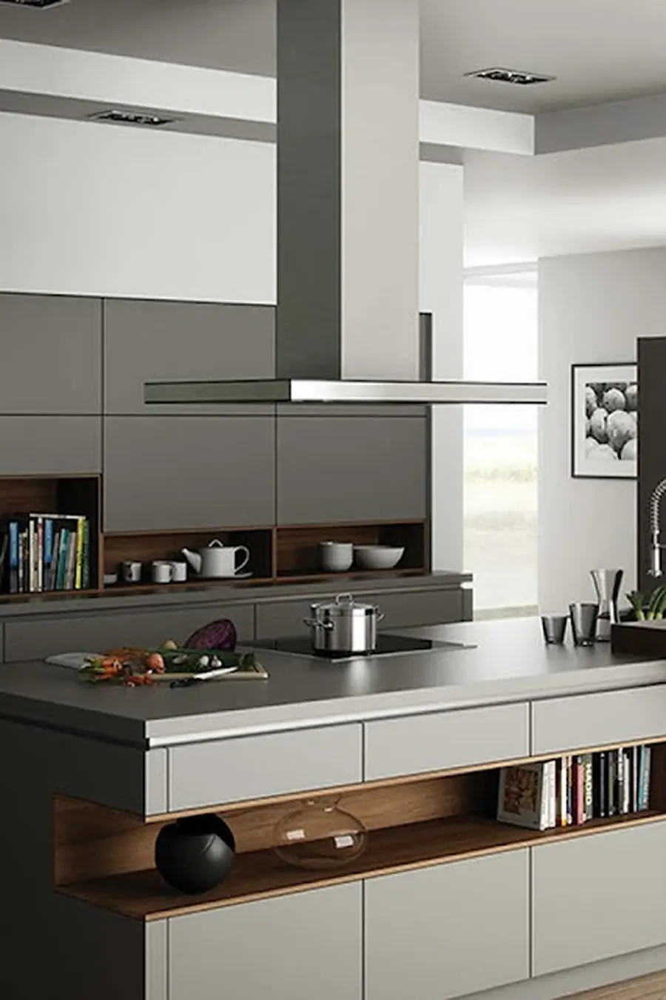
03Altküchenabbau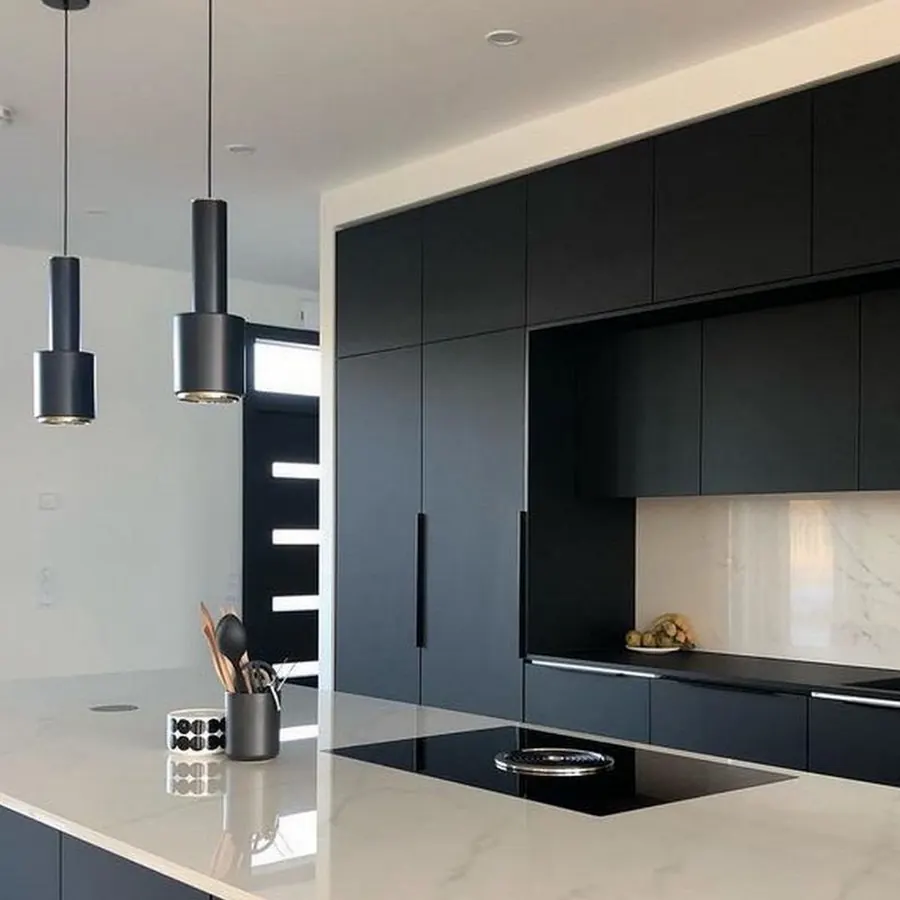
04MöbelmontageKüchenmontage
Montage von Einbauküchen jeder Art – vom Hängeschrank bis zur Arbeitsplatte. Inklusive Ausrichtung, Verblendungen und Feinjustierung, damit Fronten und Fugen exakt sitzen.
- Korpus- und Frontmontage
- Arbeitsplatten-Zuschnitt & -Montage
- Sockel- und Blendenmontage
- Feinjustierung der Fronten
Geräteanschluss
Einbau und Anschluss von Herd, Backofen, Spüle und Dunstabzug nach Herstellervorgabe – fachgerecht integriert in Ihre neue Küche.
- Einbau von Herd, Backofen & Kühlschrank
- Spülen- und Armaturenmontage
- Dunstabzug-Integration
- Anschluss nach Herstellervorgabe
Altküchenabbau
Demontage und Abtransport Ihrer alten Küche – auf Wunsch inklusive Entsorgungskoordination, damit der Platz für die neue Küche frei ist.
- Demontage der Altküche
- Abtransport
- Entsorgungskoordination auf Wunsch
- Schutz von Boden & Wänden
Möbelmontage
Auch abseits der Küche: Wir montieren Schränke, Regale und Möbel vom Möbelhaus oder Baumarkt – schnell, sauber und ordentlich verschraubt.
- Schrank- und Regalmontage
- Möbel vom Möbelhaus & Baumarkt
- Wandmontage & Befestigung
- Express-Termine auf Anfrage
So läuft Ihre Montage ab
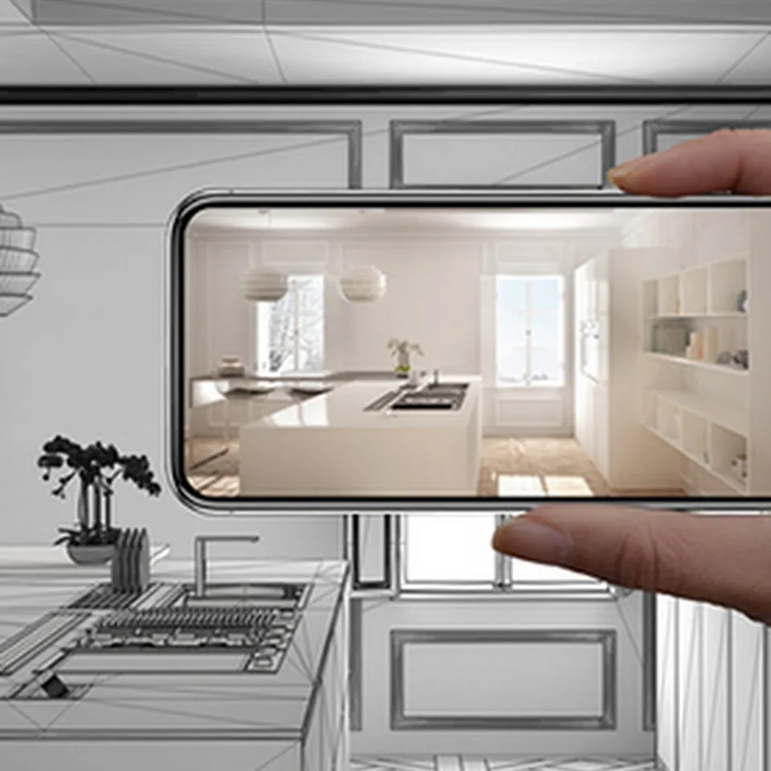
Anfrage
Sie schildern uns Ihr Vorhaben per Telefon – wir klären Umfang, Küchenmarke und Wunschtermin.
Termin & Absprache
Wir vereinbaren einen Montagetermin und besprechen vorab die örtlichen Gegebenheiten.
Montage vor Ort
Unser Team baut Ihre Küche fachgerecht auf – von der Korpusmontage bis zum letzten Handgriff.
Übergabe
Nach der Montage prüfen wir gemeinsam mit Ihnen jedes Detail, bevor wir die Küche übergeben.
Stile, mit denen wir arbeiten
Ein Eindruck der Stile und Materialien, mit denen wir bei der Montage regelmäßig arbeiten.
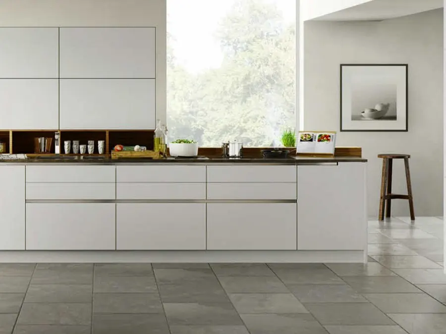
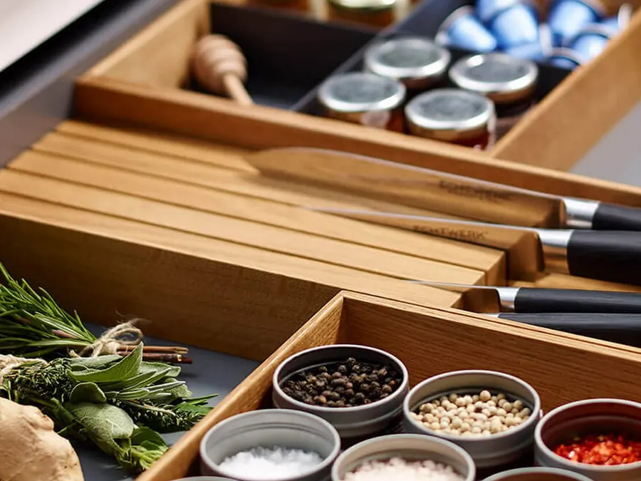
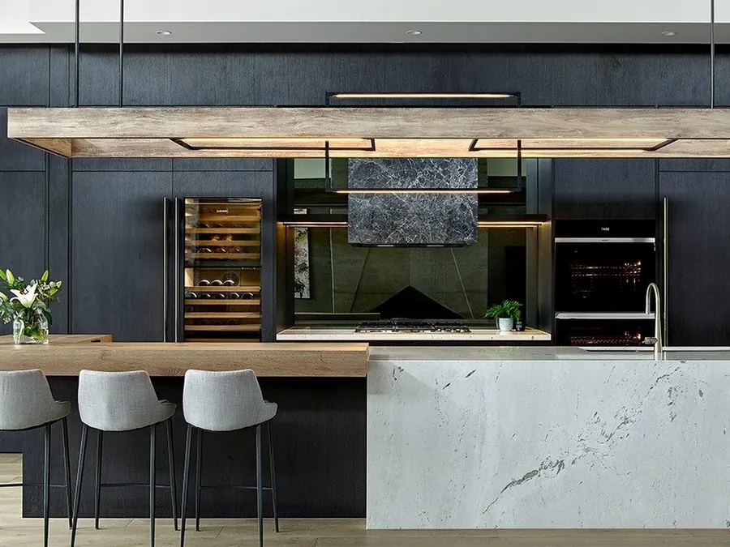
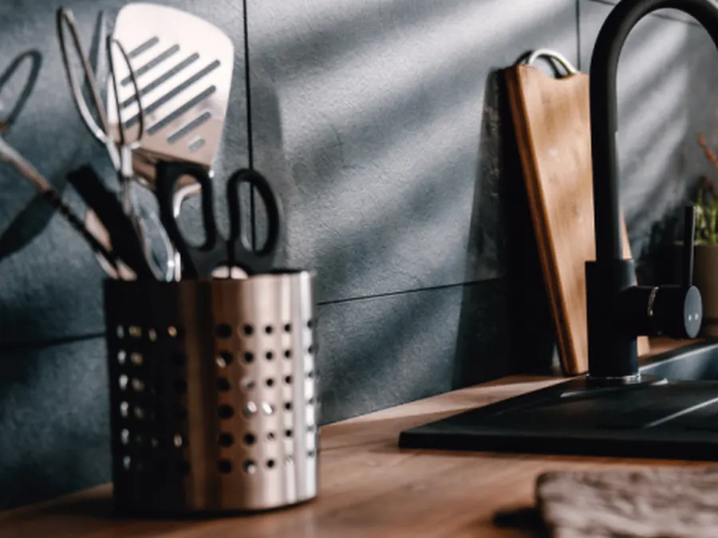
Was Kunden auf Google sagen
Sprechen wir über Ihre Küche
Rufen Sie uns an oder schauen Sie auf unserem Google-Profil vorbei. Wir melden uns zeitnah mit einem Terminvorschlag zurück.
- Telefon
- 0176 82134018
- Adresse
- [ADRESSE EINFÜGEN], Norderstedt
- Einsatzgebiet
- Norderstedt und Umgebung
- Öffnungszeiten
-
Montag – Freitag 08:00 – 18:00 Uhr Samstag Geschlossen Sonntag Geschlossen
Standort auf Google Maps
Nach Klick wird eine Verbindung zu Google-Servern hergestellt und Ihre IP-Adresse an Google übertragen.